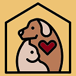

Tips para el cuidado de tu mascota
Como dueños de mascotas, todos queremos lo mejor para nuestros animales. Es importante
para todos los padres de mascotas que obtengan todo lo que necesitan para la crianza de animalitos
felices y saludables. Tener animales de compañía es una de las mejores decisiones que puedes tomar
puesto que se ha demostrado los animales pueden reducir la soledad, aumentar los sentimientos de apoyo
social y mejorar su estado de ánimo.
POr todo esto, te sugerimos algunos tips generales para el
cuidado de cualquier mascota:
- Realizar visitas regulares al veterinario
- Atender sus necesidades nutricionales
- Proporcionar un ambiente seguro para su desarrollo
- Generar espacios de juego
- Mantener condiciones de higiene óptimas